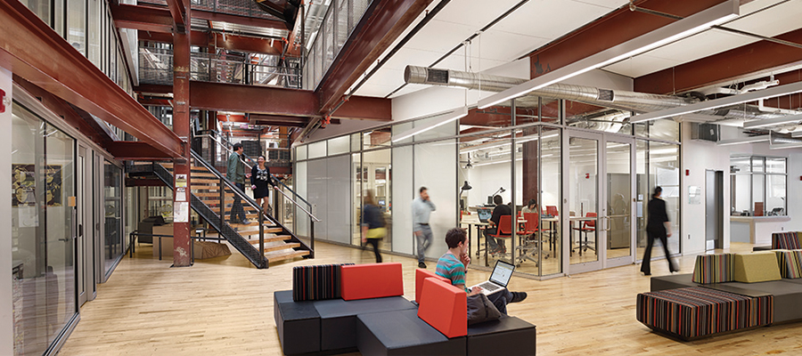
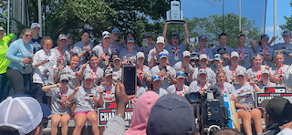
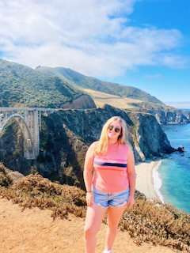
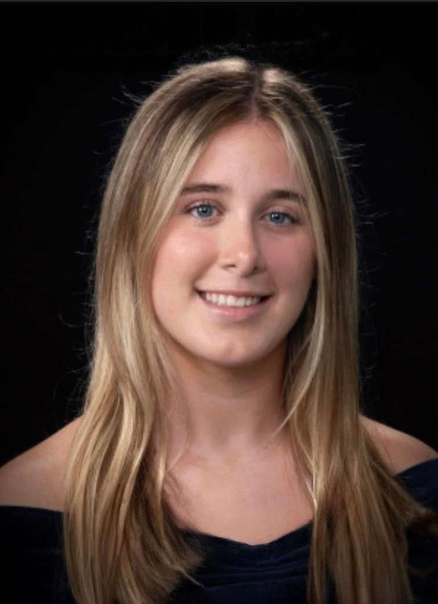
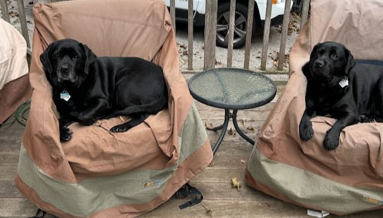

About Me


Hello! My name is Keira Vaughan! I am a Sophomore User Experience and Interaction Design major at Drexel University. I am a transfer student and used to go to the University of Rhode Island.
During my time there I was apart of their rowing team and won an Atlantic 10 Conference Title! I love solving problems, and making experiences more enjoyable for everyone! I am very driven, and constantly strive to strengthen my skills, designs, and processes.
I am from Havertown, Pennsylvania and love all things Philadelphia!


skills


Education
Drexel University: Philadelphia, PA
Major: User Experience & Interactive Design
Anticipated: June 2029
Project Experience
Textbook Resale
- Orchestrated a seamless ordering process by having customers order through google forms, making it an easy process for the customers.
- Researched different websites for cheaper versions of the textbooks needed, to ensure customers got the best experience.
- Designed a logo for Textbook Resale utilizing programs like Adobe Illustrator, and Canva, to make sure the logo fits the brand identity.
Lloyds Banking Group
- Completed a job simulation involving competitor research and user experience enhancement for Lloyds' UX Design team.
- Designed and analysed customer surveys, collecting feedback from 50 respondents to identify key areas for feature improvement.
- Utilised data visualisation tools and techniques to present survey findings, enhancing the clarity and impact of user experience recommendations.
Interests & Hobbies
Outside of Designing I love to cook, watch movies, go to the gym, and listen to music. (I love getting music recommendations) I also dog sit and have two dogs of my own, their names are Maddie & Mabel.
